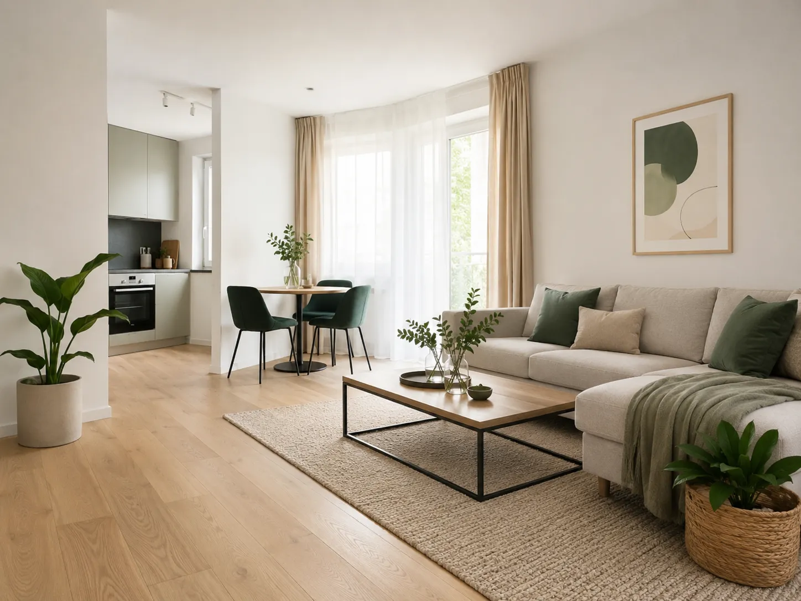

Profesjonalne zarządzanie najmem
Zacznij czerpać korzyści z najmu bez codziennych zmartwień
Przejmujemy codzienną obsługę wynajmowanego mieszkania lub lokalu — od przygotowania oferty i znalezienia najemcy, przez nadzór nad płatnościami i usterkami, aż po zakończenie najmu.
Ty zachowujesz kontrolę nad swoją nieruchomością. My zajmujemy się bieżącymi obowiązkami.
Stała miesięczna opłata. Bez dodatkowej prowizji za znalezienie najemcy.
Zadzwoń: 602 218 958Porozmawiaj o swojej nieruchomości.

Kompleksowa obsługa najmu dla właścicieli nieruchomości
Pro Estate Partners zapewnia kompleksową obsługę najmu mieszkań i lokali w Szczecinie, Stargardzie i okolicach.
Przejmujemy kontakt z najemcą, nadzór nad płatnościami, organizację napraw oraz bieżącą dokumentację, dzięki czemu właściciel zachowuje kontrolę nad nieruchomością bez konieczności zajmowania się nią każdego dnia.
Możemy przygotować lokal do wynajmu i przeprowadzić cały proces od początku albo przejąć obsługę już trwającego najmu. Zakres współpracy zawsze ustalamy indywidualnie, zgodnie z potrzebami właściciela i specyfiką nieruchomości.
Porozmawiaj o współpracyZarządzanie najmem dla właścicieli mieszkań i lokali
Właściciele jednego mieszkania
Dla osób, które chcą wynajmować lokal, ale nie chcą samodzielnie prowadzić całej obsługi.
Właściciele kilku nieruchomości
Dla inwestorów, którzy potrzebują uporządkowanej obsługi większej liczby lokali.
Właściciele mieszkający poza regionem
Dla osób, które nie mogą regularnie pojawiać się w Szczecinie lub Stargardzie.
Właściciele trwającego najmu
Możemy przejąć kontakt z obecnym najemcą, nadzór nad płatnościami i obsługę zgłoszeń.
Kompleksowe zarządzanie najmem
Przygotowanie lokalu do wynajmu
- wizyta w lokalu,
- ocena jego stanu,
- rekomendacje dotyczące odświeżenia i doposażenia,
- podstawowe przygotowanie lokalu do prezentacji,
- wykonanie zdjęć,
- przygotowanie opisu oferty,
- zebranie informacji o wyposażeniu i stanie lokalu.
Uruchomienie najmu
- przyjmowanie zapytań od zainteresowanych osób,
- kontakt z kandydatami,
- organizowanie prezentacji,
- wstępna weryfikacja najemcy,
- ustalenie warunków najmu z właścicielem,
- przygotowanie projektu umowy najmu,
- przygotowanie protokołu zdawczo-odbiorczego,
- spisanie stanów liczników,
- przekazanie lokalu najemcy.
Bieżąca obsługa najmu
- kontakt z najemcą,
- nadzór nad pobieraniem czynszu,
- nadzór nad opłatami administracyjnymi,
- nadzór nad opłatami za media,
- miesięczne zestawienie wpływów i kosztów,
- przekazywanie właścicielowi należnych środków,
- informowanie o zaległościach,
- okresowa kontrola stanu lokalu,
- prowadzenie bieżącej dokumentacji.
Obsługa zgłoszeń i napraw
- przyjmowanie zgłoszeń przez telefon, SMS lub e-mail,
- ocena rodzaju i pilności usterki,
- organizacja drobnych napraw,
- kontakt z wykonawcami,
- koordynacja bardziej złożonych prac,
- nadzór nad naprawami instalacji wodnej, kanalizacyjnej, elektrycznej i gazowej,
- przekazywanie właścicielowi informacji o kosztach,
- dokumentowanie wykonanych prac.
Zakończenie najmu
- ustalenie terminu odbioru lokalu,
- odbiór kluczy,
- sprawdzenie stanu mieszkania,
- porównanie stanu lokalu z protokołem,
- odczyt liczników,
- wskazanie ewentualnych szkód,
- przygotowanie propozycji rozliczenia kaucji,
- organizacja prac przed kolejnym wynajmem,
- ponowne przygotowanie oferty.
Zakres obsługi ustalamy w umowie. Właściciel zachowuje kontrolę nad większymi wydatkami i najważniejszymi decyzjami.
Proces rozpoczęcia obsługi
-
1
Rozmowa telefoniczna
Poznajemy lokalizację nieruchomości, jej stan oraz aktualną sytuację najmu.
-
2
Wizyta w lokalu
Oglądamy nieruchomość i ustalamy, jakie działania będą potrzebne.
-
3
Ustalenie zakresu
Określamy obowiązki, sposób komunikacji, zasady rozliczeń i limit napraw.
-
4
Podpisanie umowy
Przedstawiamy jasne warunki współpracy i wysokość wynagrodzenia.
-
5
Rozpoczęcie zarządzania
Przejmujemy uzgodnione zadania i rozpoczynamy obsługę lokalu oraz najemcy.
Dlaczego Pro Estate Partners?
-
Lokalna obsługa
Działamy na terenie Szczecina, Stargardu i najbliższych okolic.
-
Bezpośredni kontakt
Nie korzystasz z anonimowej infolinii. Wiesz, kto prowadzi sprawy Twojego lokalu.
-
Przejrzyste rozliczenia
Otrzymujesz informacje o wpływach, kosztach, zgłoszeniach i wykonanych pracach.
-
Stałe wynagrodzenie
Nie pobieramy dodatkowej prowizji za znalezienie najemcy.
-
Sprawna reakcja
Zgłoszenia analizujemy z uwzględnieniem ich pilności.
-
Mniej obowiązków
Nie musisz samodzielnie odpowiadać na każdy telefon, organizować prezentacji i szukać wykonawców.
Twoja nieruchomość może zarabiać. Nie musi zabierać Twojego czasu.
Najem często zaczyna się jako prosty dochód z mieszkania, a po czasie zamienia się w telefony, płatności, usterki, prezentacje i dokumenty. Z Pro Estate Partners zachowujesz kontrolę nad lokalem, a codzienną obsługę przejmujemy my.
- Kontakt z najemcą Odbierasz wiadomości, telefony i zgłoszenia, gdy pojawia się problem Przejmujemy bieżący kontakt i filtrujemy sprawy wymagające Twojej decyzji
- Płatności Sam pilnujesz czynszu, opłat, mediów i ewentualnych opóźnień Monitorujemy płatności i przygotowujemy czytelne zestawienia
- Usterki Szukasz fachowców, umawiasz terminy i kontrolujesz wykonanie Organizujemy naprawy i koordynujemy wykonawców
- Prezentacje Tracisz czas na dojazdy, telefony i umawianie zainteresowanych Obsługujemy zapytania i prezentujemy lokal kandydatom
- Dokumenty Umowy, protokoły, zdjęcia i ustalenia rozchodzą się po mailach Porządkujemy dokumentację i ważne ustalenia dotyczące najmu
- Twój czas Najem zaczyna przypominać dodatkową pracę Ty zachowujesz kontrolę, my przejmujemy codzienną obsługę
Co mówią właściciele (wersja demonstracyjna)
Proste i przejrzyste wynagrodzenie
Opłata obejmuje rozpoczęcie współpracy, zapoznanie się z lokalem oraz przygotowanie obsługi.
Stała miesięczna opłata za bieżące zarządzanie najmem w zakresie wskazanym w umowie.
Nie pobieramy dodatkowej prowizji za znalezienie najemcy.
Dodatkowo właściciel pokrywa
- koszty publikacji i wyróżniania ogłoszeń,
- koszty materiałów,
- koszty napraw,
- koszty usług zewnętrznych,
- inne wydatki zaakceptowane zgodnie z umową.
Jasny zakres odpowiedzialności
Standardowa usługa zarządzania najmem nie obejmuje:
- reprezentowania właściciela przed sądem,
- prowadzenia postępowań administracyjnych,
- rozliczeń podatkowych właściciela,
- finansowania napraw i usług,
- wykonywania generalnych remontów,
- gwarantowania znalezienia najemcy w określonym terminie,
- odpowiedzialności za okres pustostanu,
- gwarantowania terminowych płatności najemcy,
- odpowiedzialności za zachowanie najemcy,
- odpowiedzialności za szkody wyrządzone przez najemcę.
W przypadku problemów podejmujemy działania określone w umowie, dokumentujemy sytuację i informujemy właściciela.
Zarządzanie najmem w Szczecinie i Stargardzie
Obsługujemy mieszkania i lokale położone przede wszystkim na terenie:
Lokalny obszar działania pozwala nam organizować prezentacje, odbiory mieszkań, kontrole stanu lokalu i potrzebne naprawy.
Sprawdź możliwość obsługi swojej nieruchomościNajczęściej zadawane pytania
Ile kosztuje zarządzanie najmem?
Jednorazowa opłata startowa wynosi 300 zł brutto. Miesięczne wynagrodzenie za zarządzanie jednym lokalem wynosi 300 zł brutto.
Czy pobieracie prowizję za znalezienie najemcy?
Nie. Nie pobieramy dodatkowej prowizji za znalezienie najemcy.
Czy możecie przejąć już trwający najem?
Tak. Możemy rozpocząć obsługę lokalu, który jest już wynajmowany, po zapoznaniu się z dokumentacją i dotychczasowymi ustaleniami.
Czy zajmujecie się prezentacją mieszkania?
Tak. Przyjmujemy zapytania i organizujemy prezentacje lokalu zainteresowanym osobom.
Czy sprawdzacie najemców?
Przeprowadzamy wstępną weryfikację kandydatów na podstawie dostępnych informacji i ustalonej procedury.
Czy kontrolujecie płatności?
Tak. Monitorujemy ustalone płatności i informujemy właściciela o ewentualnych opóźnieniach.
Czy zajmujecie się usterkami?
Tak. Przyjmujemy zgłoszenia i organizujemy odpowiednie działania. Koszty napraw ponosi właściciel.
Czy kontrolujecie stan lokalu?
Tak. W zakresie ustalonym w umowie możemy przeprowadzać okresowe kontrole stanu nieruchomości.
Na jaki czas zawierana jest umowa?
Umowa zawierana jest na czas nieokreślony z dwumiesięcznym okresem wypowiedzenia ze skutkiem na koniec miesiąca.
Jak rozpocząć współpracę?
Najprościej zadzwonić pod numer 602 218 958 i przedstawić podstawowe informacje o nieruchomości.
Przestań zarządzać najmem po godzinach
Masz mieszkanie lub lokal na wynajem w Szczecinie albo Stargardzie?
Zadzwoń i sprawdź, ile codziennych obowiązków możemy przejąć za Ciebie — od kontaktu z najemcą, przez płatności i usterki, po dokumentację i przygotowanie lokalu do kolejnego najmu.
Michał — kontakt602 218 958